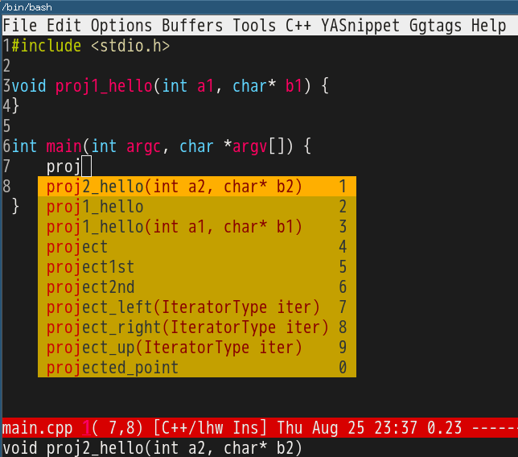

Emacs as C++ IDE, easy way
I design a quick and newbie friendly solution.
It works at Linux/OSX/Cygwin (should work at Windows, but I don't develop at Windows).
Setup is minimum. You only need install GNU Global and two Emacs plugins:
- company for code completion
- emacs-helm-gtags or emacs-counsel-gtags for code navigation. I use emacs-counsel-gtags.
Here is the step to step guide.
1 Step 1, create sample projects for experiment
Say I have two projects ~/proj1 and ~/proj2. Both projects will use third party library C++ header files from read-only directory /usr/include.
A new directory ~/obj to store the index files of third party libraries.
mkdir -p ~/{proj1,proj2,obj}
The content of ~/proj2/lib.cpp,
void proj2_hello(int a2, char* b2) {
}
The content of ~/proj1/main.cpp,
void proj1_hello(int a1, char* b1) {
}
int main(int argc, char *argv[]) {
return 0;
}
2 Step 2, scan C++ code and setup Emacs
Run below command in shell to scan code,
cd /usr/include && MAKEOBJDIRPREFIX=~/obj gtags -O && cd ~/proj1 && gtags && cd ~/proj2 && gtags
After setting up the corresponding Emacs plugins (minimum setup copied from their website is enough), insert below code into ~/.emacs,
;; Please note `file-truename' must be used!
(setenv "GTAGSLIBPATH" (concat "/usr/include"
":"
(file-truename "~/proj2")
":"
(file-truename "~/proj1")))
(setenv "MAKEOBJDIRPREFIX" (file-truename "~/obj/"))
(setq company-backends '((company-dabbrev-code company-gtags)))
3 Usage
Use the Emacs plugins as usual.
But you need install latest company built on 25th August because I fixed a company issue yesterday.
Screenshot,

4 Technical Details (Optional)
Check GNU Global manual to understand environment variables GTAGSLIBPATH and MAKEOBJDIRPREFIX.